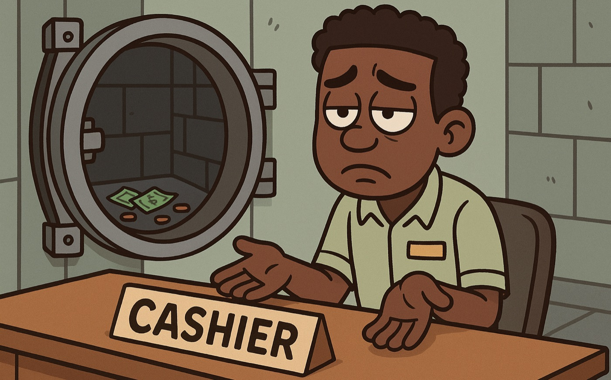

The year we couldn’t afford salaries: How to handle salary cuts & layoffs without losing trust

I know lately, I’ve been writing about the hard parts of building a company — fundraising struggles, failed ideas, tough seasons. I promise I look forward to writing about happier things soon. But I also think stories like these are important.
When we first started working on Accrue around May or June 2021, I didn’t have many examples of founders who shared their trenches stories. Most of what I saw were announcements — raises, partnerships, impressive hires. It was hard to find people who talked honestly about the times things weren’t working.
And when things weren’t working for us, I found myself craving those kinds of stories. I remember one time searching for something to hold onto and finding a video of Tosin Eniolorunda from Moniepoint talking about a really difficult season in their journey. I must have watched that video twenty times. It became an anchor — a quiet reminder that maybe, just maybe, we would wade through our own tough phase too.
That’s part of why I’m writing this. Because somewhere out there, another founder might be going through the same thing.
When we launched Accrue publicly in September 2021, we didn’t have much money. Like many early startups, we were just trying to survive. For the first year, my co-founders and I didn’t get paid. Paying ourselves wasn’t even on the table; we were just focused on keeping the lights on and paying the small team we had.
Eventually, we started taking small salaries, just enough to get by. Almost everyone else on the team earned more than us, and that was fine. Nobody sent us to build a startup.
Then things got harder, and we had to make a difficult decision — a 35% salary cut across the company. That was one of the hardest moments for me as a founder. It wasn’t just the numbers; it was the weight of what it meant for people who trusted us enough to build with us. It felt like we were disappointing brilliant people who could get better-paying jobs but chose to build with us.
I remember how heavy that period felt. You can plan for growth, you can brace yourself for investor rejections, but you can never really prepare your heart for moments when you have to tell people you can’t pay them — not because of something they did wrong, but because the company needs to survive.
What surprised me, though, was how the team responded. Everyone was incredibly understanding. I remember one person even offered to take a bigger pay cut so there’d be a bit more room for the company to breathe. I still think about that gesture sometimes. It meant a lot.
There was also someone we had to let go — not because he wasn’t good at his job (in fact, he was great at it), but because we couldn’t afford to keep him. That conversation was painful, but we told him the truth: You’re doing a fantastic job. The company just doesn’t have enough money right now.
When we eventually raised money and completed our seed round, one of the first things we did was reach out to him again. We told him we’d love to have him back. He came back to the team. It was proof that honesty and goodwill matter — that even in hard seasons, relationships can stay intact when people know you’re acting in good faith.
Looking back, there were three big things that helped us handle that season without losing trust.
1. Always act in the best interest of the company.
Even when things are rough, people notice how you lead. For us, that meant not getting paid for a year, then taking the smallest salaries when we did — putting ourselves last, and being willing to make uncomfortable sacrifices for the company’s survival. It wasn’t about trying to be heroes. It was just the right thing to do. People can tell when you’re genuinely invested in what you’re building.
I think it matters a lot more than people realize. You can’t preach sacrifice if you’re not showing it. And when your team can tell that you’re putting the company first — not your ego, not optics, not comfort — they respond with trust. It becomes easier to have hard conversations because people know your intentions are clean.
2. Be honest. Always.
Honesty can feel very uncomfortable when things are going wrong. There’s that voice in your head that says, Don’t tell them yet. Maybe things will get better next month.
From the beginning, we made transparency a part of our culture. Everyone on the team had access to a public dashboard that showed how well or poorly we were doing. And that’s still the case till now. So when we had to make hard calls like salary cuts, they already knew what the numbers looked like.
I’ve learned that most people are understanding if you’re honest with them. What creates fear or resentment isn’t always the bad news itself; it’s sometimes the feeling of being kept in the dark.
It’s not easy. You feel exposed. But being honest turns your team from spectators into allies. And when people feel like they’re part of the fight, they bring a different kind of energy to the table.
3. Communicate. Even when it’s uncomfortable.
When things aren’t going well, it’s tempting to keep quiet because it can feel embarrassing. You feel like admitting you’re struggling makes you look like you’re failing. But withholding information can do more harm than good. It creates space for assumptions and mistrust. Over time, I’ve learned to err on the side of over-communication. It keeps everyone grounded in the same reality.
Those conversations were uncomfortable, but necessary. And what I found was that people weren’t looking for perfect answers; they just wanted to know we were thinking clearly and not being dodgy.
The temptation to retreat is real. When things aren’t going well, you start to feel embarrassed, like you’ve let everyone down. But staying silent can yield a worse result.
It’s not about always having good news. It’s about showing up with honesty, even when things are messy. Even when you can’t afford salaries, you can still afford integrity.